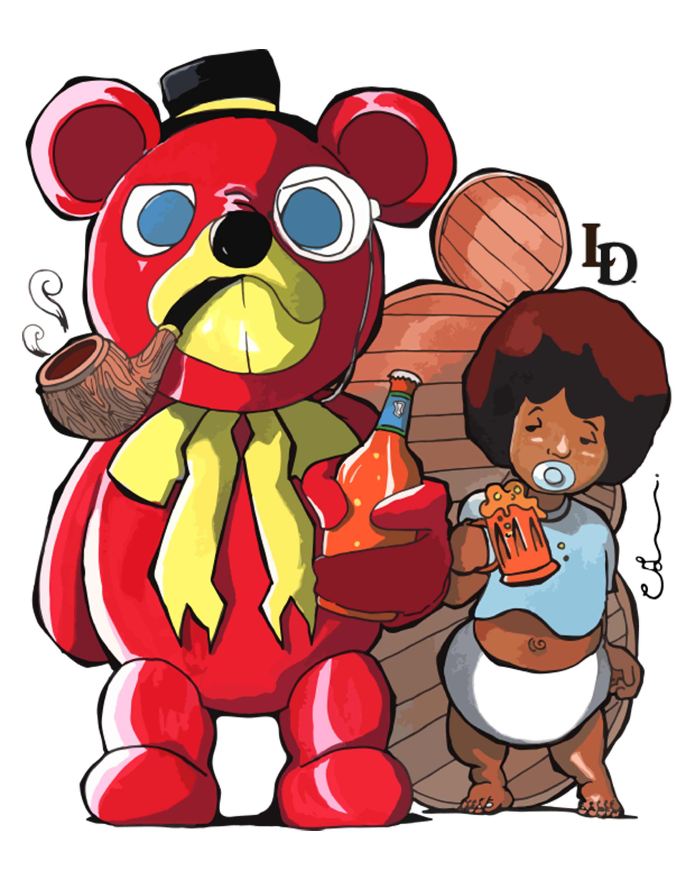

ABOUT
Hello, my name is, Christopher Leveston, and I am a professional graphic designer, illustrator and I am currently learning web design. I am also founder of, LevestonDesigns, a creative company based in Illinois. Please, take the time to view my work, from illustrations to logos, to drawings and paintings, I've done it all, and here, you can see it all.
Born and raised in the South Suburbs of Chicago, Christopher as a kid enjoyed watching his favorite cartoons, especially when Saturday mornings hit. During his junior high years, Christopher began his intense journey on learning how to get better at his drawings. Here in junior high he met others who drew and motivated him to get better at his skill. during high school, it was set in stone to never give up his dream and take art seriously and through to the very end. In high school, he taught himself programming and design from as far as he could go. Christopher learned new things relating to art and design and because of his technical personality, he could not help but to learn about computers, and how they work, ultimatly exposing him to the adobe creative suite applications.
During Christopher's first year in college, he began to study and research other artists and how they started their careers. From animators and cartoonists to painters and programmers and web designers. One thing was common among all of them, and that was the fact that they all worked hard to get to where they needed to be, and this was no exception to Christopher.
Just a Sneak Peak |
|||
|---|---|---|---|
|  |  |
 |
 |


©2018 Christopher Leveston
All Rights Reserved.